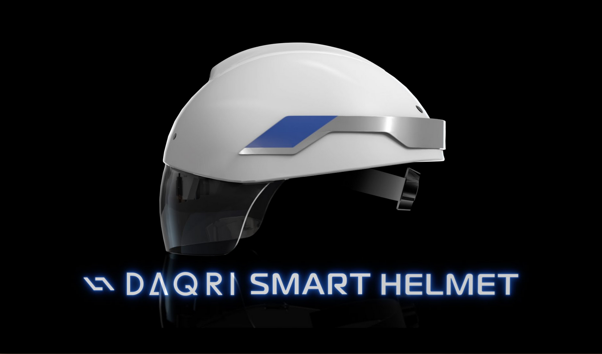
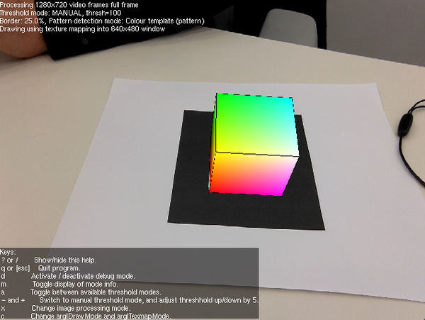
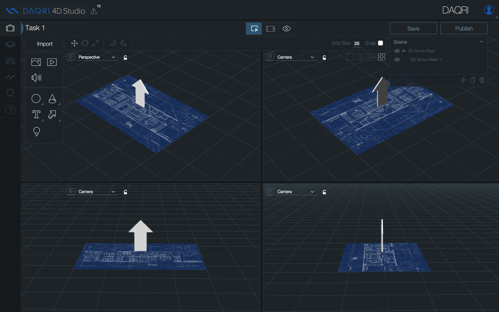
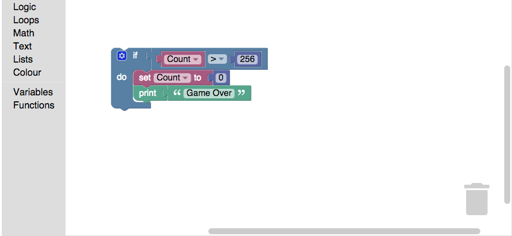

Contact me Anytime on twitter @jerome_etienne


We opened source it all!

Key concept to create interactive content
META add screenshots with examples
It Fits Perfectly the Power Users
Heard in the field
Learning how to code is time consuming
Accessible to a Wider Range of Users

Definitive for our experiment requirements

editorWin.postMessage({
type: 'loadContent',
data: contentText
}, editorOrigin)Just listen to the message event
window.addEventListener("message", function(event) {
// check if it is for my domain
if( event.source !== editorWin ) return
var message = event.data
//... here process the message
})
We simply "Escaped" it in javascript comment
// BLOCKLY XML START
// <xml xmlns="http://www.w3.org/1999/xhtml">
// <block type="threejs_onUpdate"
// id="6" x="11" y="11">
// </block>
// </xml>
// BLOCKLY XML ENDNicely loosely decoupled
Perfect for experimenting